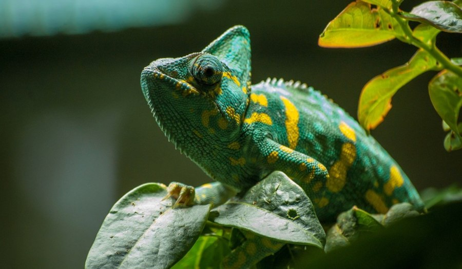
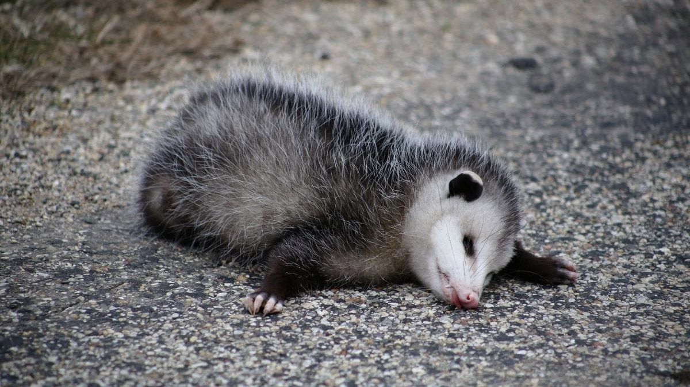

Supervivencia de los animales
¿Qué es la defensa y supervivencia de los animales?
La defensa y supervivencia de los animales se refiere al conjunto de comportamientos, adaptaciones y estrategias que les permiten mantenerse con vida en su entorno. Para defenderse de depredadores o peligros pueden usar el camuflaje, la huida rápida, el escondite, el uso de estructuras de defensa como garras, dientes o caparazones, e incluso vivir en grupo para protegerse mejor. La supervivencia también implica la capacidad de conseguir alimento, agua y refugio, adaptarse a cambios del ambiente y reproducirse para asegurar que la especie continúe. En conjunto, estos mecanismos les permiten sobrevivir en condiciones que a veces pueden ser difíciles o peligrosas.

Cripsis y Mimetismo
CRIPSIS:
Capacidad fenotípica de mimetizarse con el sustrato mediante patrones. Este mecanismo busca anular la detección por parte del depredador.
MIMETISMO:
Adaptación mediante la cual un organismo adopta la apariencia de otra especie (generalmente peligrosa) para desviar el ataque.
POR EJEMPLO:
El pez plano utiliza la cripsis para mimetizarse con el fondo arenoso del mar, volviéndose virtualmente invisible para los depredadores.

Defensas Químicas
Una vez que la evasión visual es superada, el organismo emplea su capacidad biosintética. Esto implica la liberación de ácidos o toxinas que generan una respuesta de rechazo inmediato en el depredador.
POR EJEMPLO:
La hormiga de madera secreta y dispara ácido fórmico para irritar y repeler a sus atacantes.

Armaduras físicas
Si la agresión persiste, entra en juego la resistencia mecánica. El desarrollo de un exoesqueleto o placas endurecidas sirve para salvaguardar la integridad de los tejidos internos. Esta "armadura" permite que el organismo resista fuerzas de compresión o perforación que serían letales para especies de cuerpo blando.
POR EJEMPLO:
El pez globo no destaca por su velocidad de huida; se infla para exponer espinas y una piel rígida que lo hace imposible de tragar.

Tanatosis
Como recurso final, la tanatosis o inmovilidad tónica es una parálisis simulada que detiene el comportamiento depredador. Al eliminar el estímulo de movimiento y lucha, el organismo logra que el atacante pierda el interés, permitiendo una oportunidad de escape posterior cuando la amenaza se retira.(se hacen el muerto)
POR EJEMPLO:
La zarigüeya entra en un estado de parálisis simulada cuando se siente acorralada, logrando que el depredador pierda el interés al creer que el animal está muerto o en descomposición.